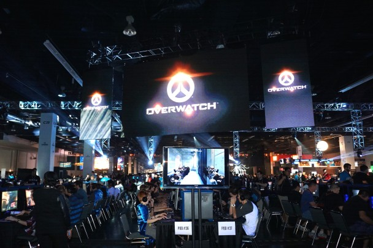
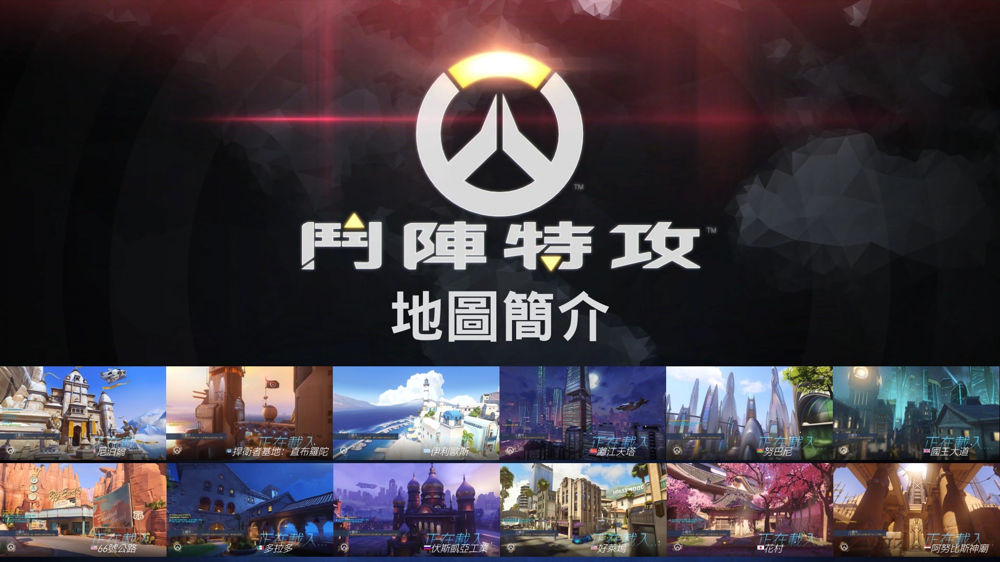
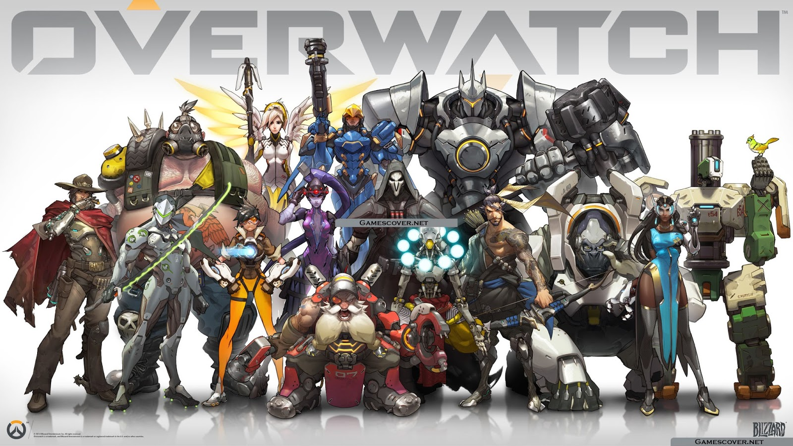
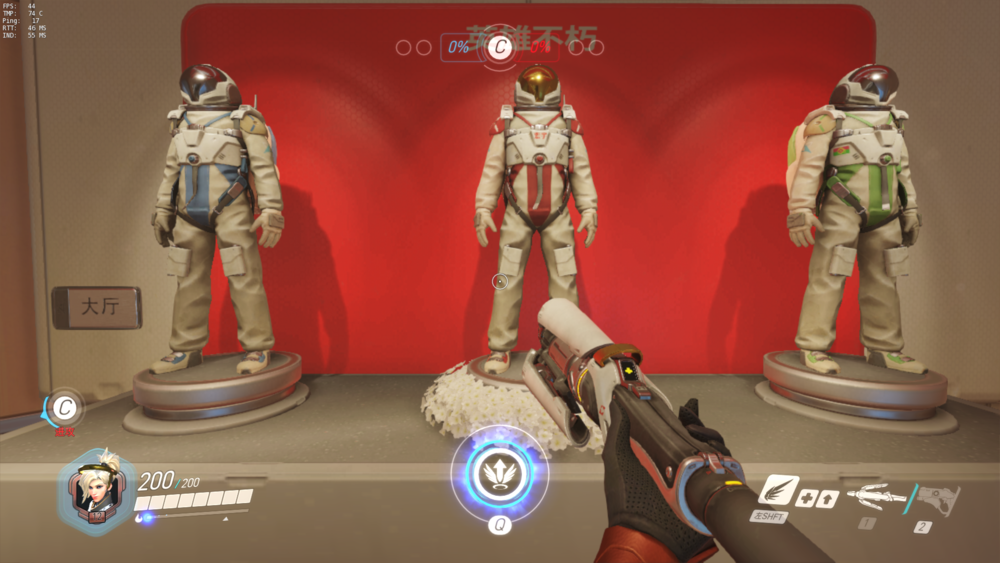
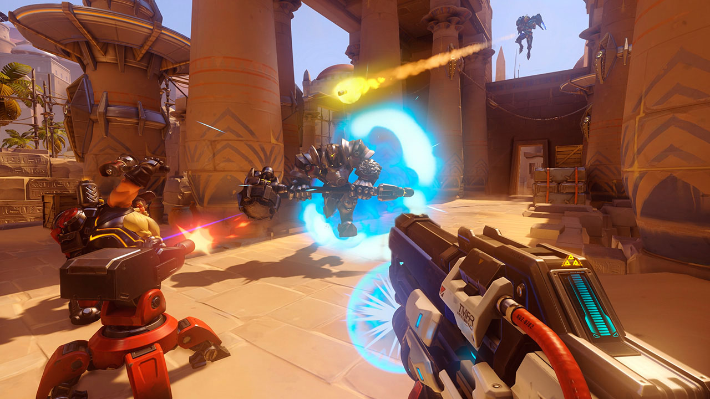
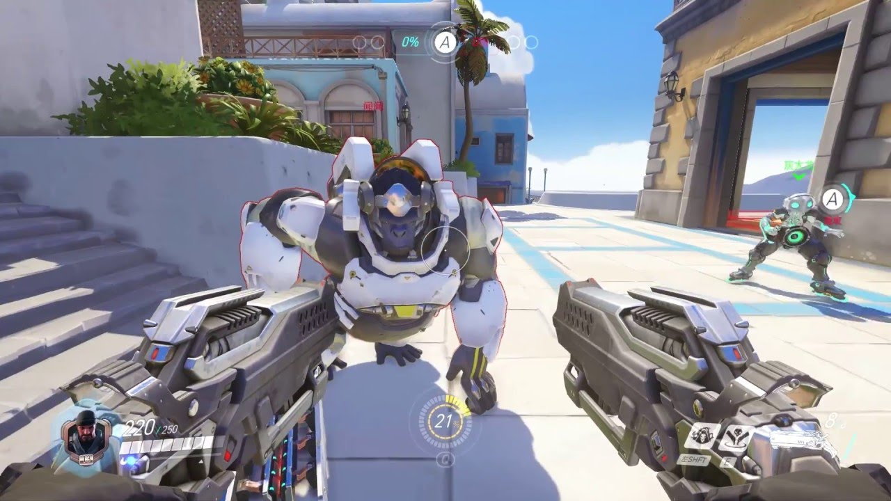
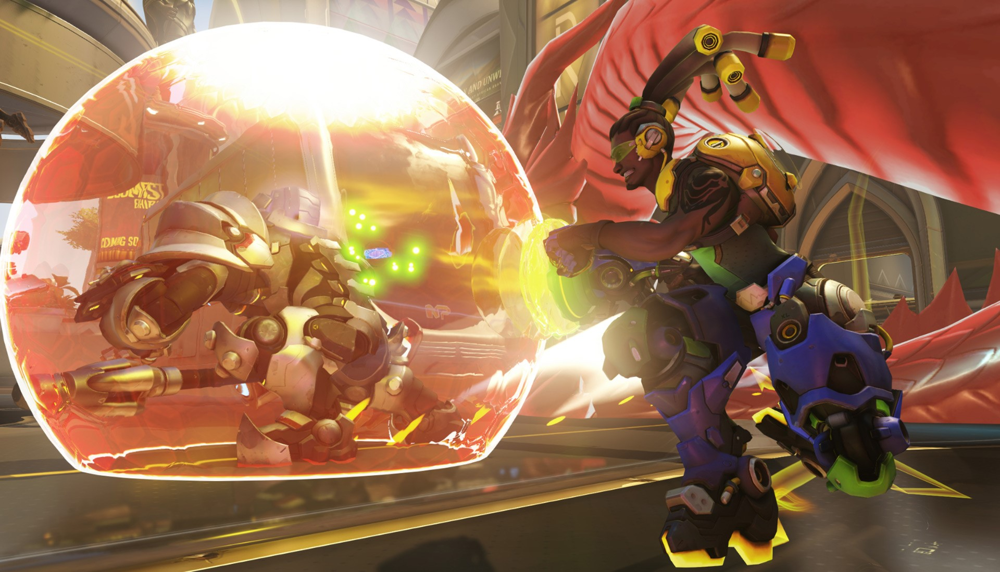
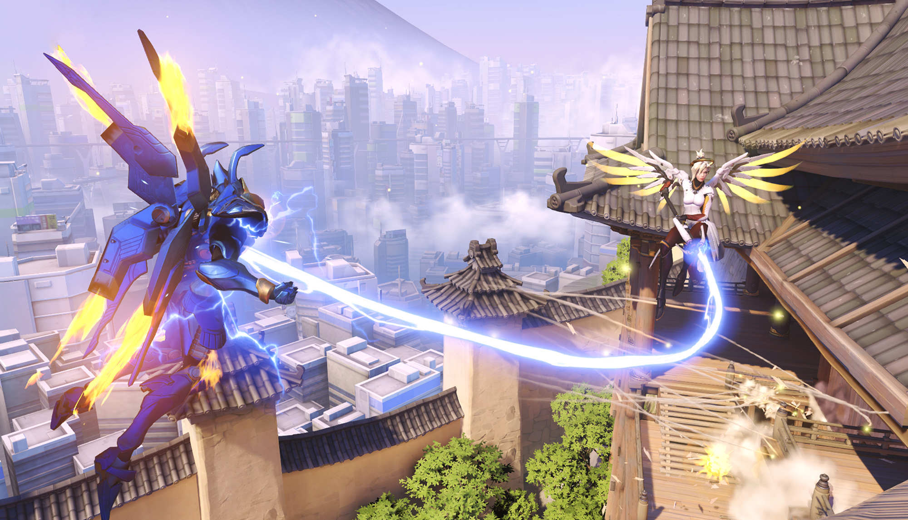
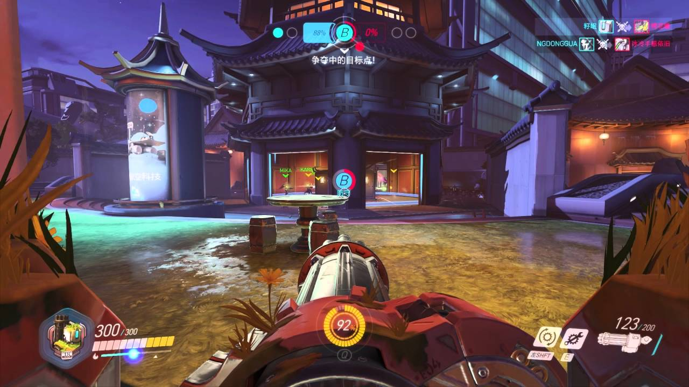

《鬥陣特攻》(OVERWATCH)
《鬥陣特攻》OVERWATCH

遊戲介紹

《鬥陣特攻》於2014年暴雪嘉年華首次亮相，並在2015年末至2016年初進行封閉測試。2016年5月的公測吸引了超過970萬玩家。遊戲發行時還用短動畫視訊進行宣傳，動畫介紹了遊戲的故事和每個人物。根據評分匯總網站Metacritic的統計，遊戲獲得了普遍好評，評論者稱讚了遊戲的易上手性和樂趣性。遊戲發售後首周，所有平台的總銷量超過700萬套。
遊戲模式

《鬥陣特攻》是一個6v6的多人團隊遊戲。就像一個多人線上戰鬥競技遊戲一樣，玩家可以從幾個角色中選擇一個，每個角色都有自己技能和風格，加上獨有的「大招」。依據定位可分為四型：攻擊型角色擁有較高的速度及攻擊力，但他們也會因此犧牲部分裝甲；而防禦型與輔助型角色可以掐住敵人的重要道路，並為隊友提供屬性加成、治療或其他幫助；重裝則擁有極高的護甲和命中率來阻擋敵人攻擊。玩家在遊戲中死亡後可以切換角色——這是遊戲設計所鼓勵的。遊戲的地圖靈感來源於現實世界。已經公布的十二個地圖分別來源於英國、中國、日本和埃及等。
已公布四種遊戲模式：
護送：一方必須在限定時間內將指定目標運送至指定地點，而另一方必須阻止他們。
佔領：一方必須占領地圖上被另一方保護的目標。
控制：雙方必須搶奪指定目標，先取二勝的團隊就能贏得比賽。
佔領/護送：結合護送&佔領的模式。
角色介紹

遊戲的首發可操控英雄角色共有21名，2016年7月追加安娜使得遊戲可操控英雄角色數達22名。玩家所操控的英雄陣亡後會回到再生室，再生室內可重新選擇其他的英雄並繼續作戰。英雄可分為四類，分別是攻擊力高但生命值少的「攻擊」型，擅長遠距離攻擊及據點防守的「防禦」型，生命值高且能守護隊友的「肉盾」型，以及擅長恢復及補助友軍的「輔助」型。
「攻擊」型：士兵76、死神、法拉、源氏、閃光、麥卡利。
「防禦」型：半藏、壁壘機兵、奪命女、小美、托比昂、炸彈鼠。
「肉盾」型：D.Va、攔路豬、札莉雅、溫斯頓、萊因哈特。
「輔助」型：慈悲、禪亞塔、路西歐、辛梅塔、安娜。
特殊事件

2016年5月23日，廣東工業大學學生吳宏宇在校區內因見義勇為阻止偷盜摩托車而在盜賊逃離時被其駕車撞倒，送醫後因顱內出血醫治無效去世。作為吳宏宇生前期待的遊戲，有其他玩家在暴雪相關的官方論壇中提及該事件，建議添加一個符合形象主題的遊戲角色，之後在2016年6月底放出的修正檔中，在地圖「灕江天塔」內加入了為吳宏宇製作的特別版太空人模型，其胸前有「宏宇」二字，在該模型下方還有一圈白花，而其身後幕布上還有「英雄不朽」的字樣。網易暴雪合作部營運總監魏愷也承認在獲得該建議並考證該事件後，認為與遊戲中英雄守望世界的主題理念契合，所以向公司總部轉達了該建議。
遊戲畫面




